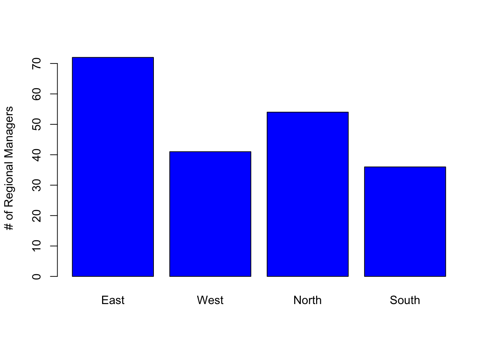
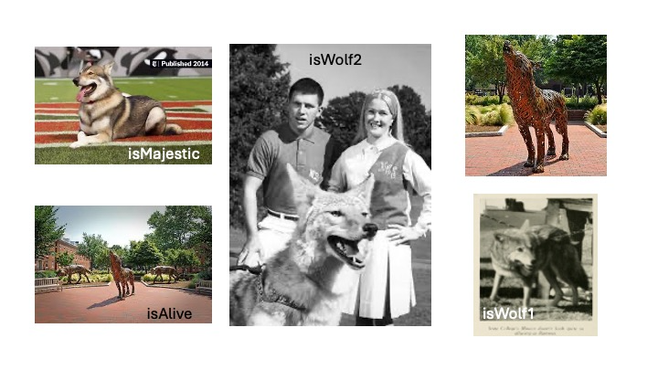

The output pane has a variety of tabs that provide access to different types of output. This includes files, plots, packages, help and a couple of other specialized output types. Tabs in this pane include:
Files
shows your file directory
projects created in a directory will set the “working directory” to the directory the project file is stored in
without a project, you may need to set a “working directory”
setting a “working directory” lets you use relative path names
Plots
this is where plots will show up when you generate them
# Lets create a little plot# create some datadata <-data.frame(a =c(72,41,54,36), b=c('East','West','North','South'))# generate plotbarplot(data$a, names.arg = data$b, col="blue", ylab="# of Regional Managers")

# function name# function parameters# return values
Packages
Interface to install packages
Installed packages
Any package listed
Loaded packages
Any package with a check mark to the left of its name
Help
Your best friend!!
You can see the details about functions you want to use
use search bar in pane or type “?barplot” in console
Viewer
Shows output for rendered notebooks
Presentation
Shows output when you generate slides using Quarto
The Pane layout is very customizable. You can access it as follows:
Mac Version
From the menu bar, select Edit->Preferences
From the sidebar in the Options window, choose Pane Layout
Windows Version
From the menu choose Tools->Global Options
From the sidebar in the Options window, choose Pane Layout
Quiz # 1
Where do you look for…?
Where would you look for the value of a variable you set?
Source Pane
Terminal Tab in the Console Pane
Environment tab in the Environment Pane
Viewer tab in the Output Pane
Where would you find the output of a plot command?
Plots tab of the Output pane
Source pane
History tab of the Environment pane
In a notebook, below the code block that generates the plot
What pane is your script or notebook file open in?
Source pane
Console pane
Environment pane
Output pane
Quiz # 1 ANSWERS
Environment tab in the Environment Pane
Plots tab of the Output pane
Source Pane
Notebooks & Scripts
Through RStudio, you can use and render R code in a variety of ways including:
You can easily run the entire script using the Run command
Only comments and code.
Notebooks
Great way to have text and code together
Can contain text, code chunks, equations, tables
Good when small bits of code are being run for a discrete task.
Two options: R Notebooks (.Rmd) and Quarto (.qmd)
Quarto is language-agnostic where as R Notebooks are tied to RStudio
I choose Quarto for the flexibility
For this workshop, we will work in a Quarto notebook to take advantage of the ability to have readable text along side runnable code.
Variables in R
Variables are named containers used to store information. What can we name them? Almost anything we want, according to the following rules:
name has to start with a letter
can contain any combination of letters, numbers and can include periods “.”
can’t start with an underscore, “_”
are case sensitive
can’t be any of the reserved words in R
What R reserved words?
All programming languages have reserved words. These are words that have a specific meaning to the language itself. Some examples in R include:
TRUE
FALSE
NULL
if
You can see the reserved words in R by typing ?reserved at the console prompt. You can also find a list of reserved words here.
Will it Variable?
For a variable to be useful, you must give it a value. To set a variable to a value, you use the assignment operator. In R, to assign a value to a variable we use “<-”. We’ll talk more about operators later, but now you know the assignment operator!
The code box below shows some example variables. Use the arrow to the left of the code box to run the code.
# Set some variables:wolf.name <-"Smiley"wolf.age <-5# See the variable valueprint(wolf.name)
[1] "Smiley"
print(wolf.age)
[1] 5
I Digress …
In most programming languages, you use “=” as the assignment operator, like you’ve seen above the R convention is to use <-. While R lets you use “=”, the convention is to use “<-”. This is a holdover from the language from which R is derived, S. R programmers have feelings about this. Programmers are funny, funny people. Welcome to the club!
QUIZ # 2
Using the rules listed above which of the following passwords will work?
My_favoritePASSWORDofAlL.tymes
_favoritePW
PW6
PW6_myfav
6PW
If
if
# Not sure which will run?# Use the assignment operator to assign the value 5 to a variable using the# names above. Feel free to test some you define yourself!My_favoritePASSWORDofAlL.tymes <-5
determine how they are handled as input and output
how you can use the variable
sometimes R cares about what data type you use
sometimes R doesn’t care (e.g., it is really flexible)
We’ll talk about 4 main data types today:
Numeric
Text
Date/Time
Logical or Boolean
Numeric
Numeric values are exactly what they sound like: numbers. R can work with integer, double (floating point or decimal) and complex numbers. We’ll focus on integer and double since they are the most common.
Some languages aggressively distinguish between integers (whole numbers) and double (numbers with a decimal point) values. R does not. In R, when you store a number it is loaded as a double regardless of whether it has a decimal point or not.
Most of the time you don’t have to worry about whether a number is an integer or a double value. However, R has functions that check or convert a number to integers and floats. Read more about numbers in R here.
Let’s look at some examples.
# Create some variables and set them to numeric valuesnumWolves <-5pctWolves <- .20print(numWolves)
[1] 5
print(pctWolves)
[1] 0.2
print(typeof(numWolves))
[1] "double"
print(typeof(pctWolves))
[1] "double"
numWolves <-5.0print(numWolves)
[1] 5
print(typeof(numWolves))
[1] "double"
print(as.double(numWolves))
[1] 5
Text
We’ve looked at the scary, scary numbers. Let’s look at good old familiar text. Run the code in the block below. What data type does R see string data as? Hint: run the last line!!
# Some text exampleswolf.name <-"Scruffy"wolf.initial <-"D"wolf.FavoriteArtist <-"Prince"print(wolf.name)
[1] "Scruffy"
print(wolf.initial)
[1] "D"
print(wolf.FavoriteArtist)
[1] "Prince"
print(typeof(wolf.name))
[1] "character"
Storing Sentences
When dealing with longer sentences, it is important to keep track of double- and single-quotes.
# You can use single quotes to surround a stringwolfQuote1 <-'He had learned well the law of club and fang.'print(wolfQuote1)
[1] "He had learned well the law of club and fang."
# You can nest double and single quotes.wolfQuote2 <-"'You poor devil,' said John Thornton, and Buck licked his hand."print(wolfQuote2)
[1] "'You poor devil,' said John Thornton, and Buck licked his hand."
# Notice what happens when you switch the single and double quoteswolfQuote3 <-'"You poor devil," said John Thornton, and Buck licked his hand.'print(wolfQuote3)
[1] "\"You poor devil,\" said John Thornton, and Buck licked his hand."
Dates & Times
Dates are their own special kind of special. The Date/Time data type is useful for:
Outputting dates so they look pretty and conform to the style you want them to (e.g., 8/26/2025, August 26, 2025; 25/08/2025).
Doing date math: how many weeks, days, months, years between two dates, etc.
We can define a date as a string. The computer doesn’t care. While we can print the data, we can perform any date math on it. Uncomment the last line in
dateStr <-"07/15/2025"print(dateStr)
[1] "07/15/2025"
# addDays <- dateStr + 4
To be able to manipulate dates you need to store or convert them to a date. In Base R, i.e., without loading a library, there are 3 main functions that convert a string to a date: as.Date(), as.POSIXct(), and as.POSIXlt(). as.Date() stores only date info, while the two as.POSIX functions store time info, including timezone. The difference between the two as.POSIX functions lies in how the data is stored.
# Let's try some dates# create text datewolf1.bday.str <-"8/18/2019"# convert using as.Date()wolf1.bday <-as.Date(wolf1.bday.str, format ="%m/%d/%Y")print(wolf1.bday)
[1] "2019-08-18"
# convert using as.POSIXct()wolf2.bday <-as.POSIXct("11-01-2015", format="%m-%d-%Y")print(wolf2.bday)
[1] "2015-11-01 EDT"
For a list of format codes like %m and what they represent, type ?strptime() in the console and look in the Details section.
You may have noticed that when we print out the date, even though we provided the format of the date, it printed out in a YYYY-MM-DD format. This reflects how the date is stored. However we can use the format() command with the date codes found in the strptime() help to print the date out in many different formats.
A Boolean value is one that can take one of two values: 0 or 1. In R, these types of values are represented using the “logical” data type. The logical data type takes the value TRUE (1) or FALSE (0). It is good for setting flags and creating indices to subset data.

Examples for logical values
# Example of boolean variables based on pictureisAlive =FALSEisWolf.1=TRUEprint(isWolf.1)
[1] TRUE
print(isAlive)
[1] FALSE
# What do you think? Uncomment the two lines below and set them to the value you think they should be and print them to screen.#isMajestic = #isWolf.2 = # print(isWolf.2)# print(isMajestic)
Logical values are used ubiquitously in programming, particularly for program control. When we get to the material on operators, you will begin to see how they are used.
Data Structures
We’ve looked at the basic data types in R and how to store values in variables. In this section, we’ll explore 3 widely-used data structures. Data structures are programming structures that allow storage of multiple values.
The structures we will explore are:
arrays/vectors
matrices
data frames
Basic distinguishing factors between data structions include:
how many data types to they allow? one? more?
how many dimensions do they allow? 1? 2? more?
There are two aspects of using data structures:
how to create them; and,
how to access the data in them.
We’ll cover both.
Vectors (1-D Arrays)
Vectors store data in one dimension. The allow only one data type.
I Digress …
In point of fact, R is a vectorized language. What does that mean? It means scalars (single values) in R are really 1-element vectors. Will this have a big impact on learning R? No, probably not. But you can whip this fact out at parties and amaze your friends.
How to Create Vectors
# EXAMPLES OF HOW TO CREATE VECTORS# (Single Data Type)# Numeric# Since R sees integers and decimal data as double, vectors can contain bothnum.vec <-c(10, 4.5, 7, 12.2, 3.0)print(num.vec)
[1] 10.0 4.5 7.0 12.2 3.0
print(typeof(num.vec))
[1] "double"
# Examples using other data typestxt.vec <-c("Talley", "SAS Hall", "Hunt Library")log.vec <-c(TRUE, FALSE, TRUE, TRUE)
Vectors only store one data type…really, really! But, what happens if you mix data types?
# Let's store some info about a pet cat named Fluffy: name, weight, isFemale, birthdate and agemixed.vec <-c("Fluffy", 12.0, TRUE, as.Date("9/1/2024",format="%m/%d/%Y"), 2) # so far so goodprint(mixed.vec) # oops...
[1] "Fluffy" "12" "TRUE" "19967" "2"
While R will let you pass different types of data to an array, it will convert all values to a single type. How it converts these values depends on what types of values you put in it. To see that this may not always be text, remove “Fluffy” from the vector and print it out again.
Matrices (or n-D Arrays)
Matrices:
can have 2 or more dimensions
hold only one data type
They are useful in computational work. There are a couple of ways to declare a matrix in R.
If you only need a 2-dimensional matrix (rows and columns only), you can use matrix().
# generate 35 random values between 0 and 50data <-sample(0:50, size =35, replace =TRUE) # generates a vectorprint(data)
To create a matrix that has more than 2 dimensions, you must use the array() function.
# generate 75 random values between 0 and 50data <-sample(0:50, size =75, replace =TRUE)# make a 3-D matrix from datamatrix.3D <-array(data, dim =c(5, 5, 3))print(matrix.3D)
Name isFemale weight.lbs Age
1 Fluffy TRUE 9.0 15
2 Max FALSE 11.5 5
3 Coco TRUE 15.0 3
Accessing Data In Vectors, Matrices and Data Frames
Elements in these data structures can be accessed using indices. You will need one index for each dimension the structure has. We’ll access data in the example structures we made earlier. Note: Make sure you ran the code above to make sure the data structures have been defined. To ensure this is done, you can click on Run above and choose “Run All Chunks Above”.
# VECTORS# extract the 3rd value in num.vecval <- num.vec[3]print(val)
[1] 7
# extract the second through fourth values from num.vecvals <- num.vec[2:4]print(vals)
[1] 4.5 7.0 12.2
# extract the first, third and fifth (non-contiguous) values from num.vecidx <-c(1, 3, 5)print(num.vec[idx])
[1] 10 7 3
# print the value in the 3rd row, 6th column of matrix.2Dprint(matrix.2D[3,6])
[1] 32
# print the value in the 4th row, second column, third dimension of matrix.3Dprint(matrix.3D[4,2,3])
[1] 48
# print Max's age from catDataprint(catData[2,4])
[1] 5
# You can also print(catData[2,"Age"])
[1] 5
Try It Yourself!
We showed how you can access a contiguous range or non-contiguous set of values in a vector.
In the code chunk below try accessing the data in the matrices (2D & 3D) and data frame using the methods we used with the vector, do it for one index or more than one.
Name weight.lbs
1 Fluffy 9.0
2 Max 11.5
3 Coco 15.0
QUIZ # 4
For the scenarios described below indicate what type of data structure would work. Use whether the data is a single data type or multiple and whether the structure of the data would make more sense in more than one dimension to decide. There may be multiple possibilities. In practice you may start with one structure and pivot to another one to take advantage of the new data structure’s strengths.
You want to store data about cars you are test driving this weekend. You want to store the make, model, year, price, mpg city and mpg highway.
What type of data structure should you use and why?
You want to store the number of Fiction and Nonfiction Books you own on 4 shelves of your bookcase.
What type of data structure should you use and why?
You want to store the weight of 6 beetles in grams.
What type of data structure should you use and why?
You want to store temperatures for five days, from three different towns at 2 locations in each town.
What type of data structure should you use and why?
Quiz # 4 Answers
ANSWER: You have multiple data types and could store this in a 2D structure. Therefore, a data frame would work nicely.
ANSWER: You are storing a single data type: numeric. You could use a vector of length 8 (4 shelves x 2 types of books). However, it would probably be easier to create a 2-D matrix that has 4 x 2 or 2 x 4 dimensions.
ANSWER: You are storing a single data type: numeric. There doesn’t seem to be structure to the data that requires more than one dimension. Therefore, a vector would work nicely.
ANSWER: In this case you have one data type so you could use a vector or a matrix. The data suggests a natural 3-D structure, where one dimension could represent days, another towns and a third dimension the locations in each town.
Operators
Operators are used to perform, not unsurprisingly, operations. They provide a way to manipulate and compare values and variables. Operators may sound exotic, but you’ve encountered them in any basic math class you’ve ever taken. We’ve covered the assignment operator…quick what is the assignment operator?
We’ll cover the following kinds of operators:
Arithmetic,
Relational, and
Logical (Boolean).
Arithmetic
I’m sure you can already guess what these are:
Operator
Operation
Example
-
negation
-5
+
addition
amt1 + amt2
-
subtraction
amt1 - amt2
*
multiplication
2 * amt1
/
division
amt1 / 2
^ or **
power
2 ^ 3
%%
modulus
10 %% 3
%/%
integer division
10 %/% 3
Most of the arithmetic operators should be familiar. You can use variables or values as operands.
# Use operators with values only5+6
[1] 11
5-6
[1] -1
5*6
[1] 30
5/6
[1] 0.8333333
5^6
[1] 15625
5**6
[1] 15625
# Define variablesvar1 =2var2 =8# Use operators with vars onlyvar1 + var2
[1] 10
var1 - var2
[1] -6
var1 * var2
[1] 16
var1 / var2
[1] 0.25
var1 ^ var2
[1] 256
var1 ** var2
[1] 256
# mix it upvar1 +5
[1] 7
var2 -6
[1] 2
# you get the idea.
Two operators may be new to you. These include the two operators that perform integer math. The modulus operator, %%, returns the remainder of integer division. While integer division operator, %/% returns the whole number quotient of the division operation of two integer operands.
var1 =10var2 =3# Integer divisionvar1 %/%3
[1] 3
# Modulusvar1 %% var2
[1] 1
# Both operators work with any combination of values and variables.
I Digress …
Operators can be referred to as unary or binary. From math class, you may recall that operators act upon operands. Unary means that an operator takes a single operand while binary indicates it takes two. The - operator is an example of an operator that can work as an unary (-2) or binary operator (5-2). It is not essential you know this, but if you hear it in the future you’ll know what it means.
Relational
Relational operators are used to compare two values. The result of using relational operators is a logical (Boolean) value: TRUE or FALSE.
Operator
Operation
Example
<
less than
mynum < 3
<=
less than or equal to
mynum <= 3
>
greater than
mynum > 3
>=
greater than or equal to
mynum >= 3
==
equality
“a” == “b”
!=
inequality
“a” != “b”
While comparing decimal (double) numbers using > or < returns results we expect, using >=, <= or == is more complicated. You can do it and it will return an answer, but depending on what you are trying to do it may not return the answer you want or need.
Say you are comparing weights of dogs, and you want to know if two dogs weight the same. Dog 1 (“Sparky”) weighs 70.0000 pounds while Dog 2 (“Bella”) weighs 70.0001 pounds. In principal are these two weights different? While technically Sparky weighs less than Bella, is this information useful? In most scenarios this difference would not be meaningful. This means if we use == we will not get the results we really want.
wt.Sparky =70wt.Bella =70.01wt.Sparky == wt.Bella
[1] FALSE
If the desired behavior we want from this comparison is that the two weights are the same, simply comparing the two numbers using the equality operatory won’t work.
Do address this situation, we have two options: 1. We can round the number to an appropriate precision. In this case, we might want to identify equality in terms of whole pounds or perhaps to the first decimal place. However, if we need to keep the precision for later calculations we have to make a new variable before we do the comparison. 2. An alternative is to use code that compares the absolute difference between the two value and indicates equality if the difference is less than a very small number which is related to the precision at which equality is met for our purposes.
Let’s look at an example
# Example 1 we want to compare # Define Sparky & Bella's weights again and add a third dog, Fido.wt.Sparky =70wt.Bella =70.01wt.Fido =70.1# Scenario 1: Dogs weight the same if their integer weight in pounds is the same. [All dogs weights are equal.]prec1 <-1# code to check equality at whole integer levelequal1 <-abs(wt.Sparky-wt.Bella) < prec1 # TRUE (e.g. weights are equal)equal2 <-abs(wt.Sparky-wt.Fido) < prec1 # TRUE (e.g. weights are equal)# Scenario 2: Dogs weight is the same if their integer weight in pounds is the same to the first decimal place. [Sparky and Bella weight the same, but Fido's weight is not equal to either.]prec2 <- .1equal1 <-abs(wt.Sparky-wt.Bella) < prec2 # TRUE (e.g. weights are equal)equal2 <-abs(wt.Sparky-wt.Fido) < prec2 # FALSE (e.g. weights are not equal)
The issue with comparing doubles is further complicated by issues that arise from translating binary values (how the data is stored in the computer) to double (what we manipulate and use in R). The following code provides an example:
# Let's print out the absolute difference between Sparky and Bella's weightsabs.dif <-abs(wt.Sparky-wt.Bella) print(abs.dif) # prints out .01...Looks good!
[1] 0.01
# But....# look at value of abs.dif in the Environment pane....?!?!
Logical
Logical operators are used to compare logical values, variables or relational expressions that evaluate to logical values. There are three logical operators: AND, OR and (different) NOT. The following operators compare any combination of boolean values, variables or expressions that evaluate to a boolean value, e.g. a relational expression.
Operator
Operation
Example
&&
Logical AND
isCute && isBig
||
Logical OR
isCute || isBig
!
Logical NOT
!isCute
AND
The results of using logical operators can be summarized in a “truth table”. Essentially, the AND operator (&&) only returns TRUE if both of the variables (or expressions) are TRUE. The truth table for AND is shown below:
var1/expr1
var2/expr2
var1/expr1 && var2/expr2
FALSE
FALSE
FALSE
FALSE
TRUE
FALSE
TRUE
FALSE
FALSE
TRUE
TRUE
TRUE
# Using two variablesvar1 <-TRUEvar2 <-FALSEvar3 <-TRUEprint(var1 && var2)
[1] FALSE
print(var1 && var3)
[1] TRUE
# Using expressions (relational)val1 <-5# determine if value is between two numberslog1 <- (val1 >5) && (val1 <10)
OR
The OR operator (||) only returns FALSE if both of the variables (or expressions) are FALSE. The truth table for OR is shown below:
var1/expr1
var2/expr2
var1/expr1
FALSE
FALSE
FALSE
FALSE
TRUE
TRUE
TRUE
FALSE
TRUE
TRUE
TRUE
TRUE
# Using two variablesvar1 <-TRUEvar2 <-FALSEvar3 <-FALSEprint(var1 || var2)
[1] TRUE
print(var1 || var3)
[1] TRUE
# Using expressions (relational)val1 <-5# determine if value is between two numberslog1 <- (val1 >5) || (val1 <10)
NOT
The NOT operator (!) returns the opposite logical value of the value, variable or expression associated with it. The truth table for NOT is shown below:
var1/expr1
var2/expr2
var1/expr1
FALSE
FALSE
FALSE
FALSE
TRUE
TRUE
TRUE
FALSE
TRUE
TRUE
TRUE
TRUE
I Digress…
The logical operators above compare single variables or values. However, sometimes you may want to compare to vectors, or matrices element by element. You can do this using the element-wise operators shown below.
A. Predict the output of the following logical expressions:
has_library_card && book_available
book_available || is_overdue
!fine_paid
is_overdue && !fine_paid
!(is_overdue || fine_paid)
is_nc_state_student || is_faculty
B. Scenario Questions
For each scenario, write one R expression — using the variables above and &&, ||, and/or ! — that answers the question (Q.), then work out whether it’s TRUE or FALSE.
Scenario 1 — Checkout eligibility. Circulation policy: a patron may check out an item only if they have a library card and the item is currently available.
Q. Can this patron check out this book?
# Test your expressions here
Scenario 2 — In-library access. Open-stacks policy: a person may use an item inside the library if they have a library card or the item is a reference item (reference material can always be used in-library without checkout).
Q. May this person access this item in the library? (Hint: use is_reference_item.)
# Test your expressions here
Scenario 3 — Blocked accounts. Account policy: an account is blocked from new checkouts if the patron has an overdue item and has not paid the associated fine.
Q. Should this patron’s account be blocked?
# Test your expressions here
Scenario 4 — Overdue-fine exemption. Fine policy: an item is exempt from an overdue fine if it is a reference item or it has not exceeded the maximum loan period.
Q. Is this item exempt from a fine? (Hint: Use is_reference_item and is_overdue_by_policy.)
In our next workshop, Control Flow and Functions, we’ll learn about and practice:
Conditional and Flow Control Statements
if
for
while
Functions, including
built-in
library
user-defined
Getting help
File Input and Output
Before You Go
Take our Survey
We appreciate your input. Let us know how this Workshop went for you! We take your input seriously and appreciate the time you take to give it. Please fill out our survey.
Need Additional Help?
We are available to help you with whatever question you have about this Workshop or programming in general. If you run into snags or questions (we all do), as you start to create programs for yourself, reach out to us. Send an email, make an appointment, or reserve a workstation! We are here to assist you to be successful in your data science journey.